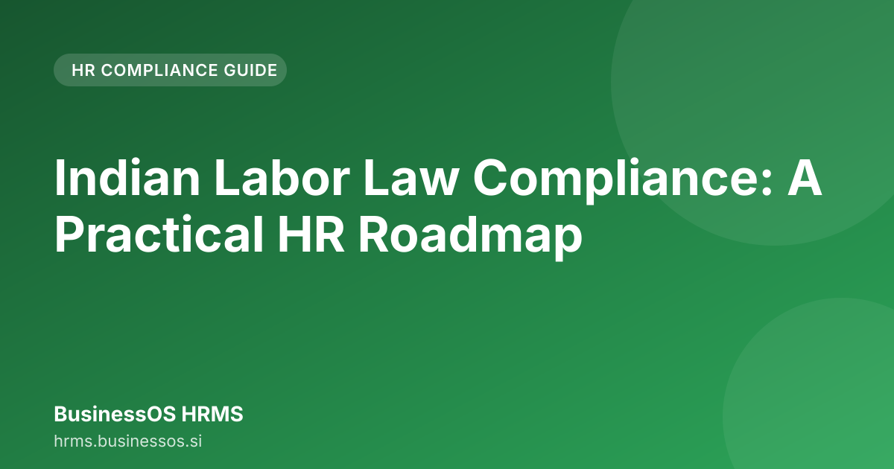

Indian Labor Law Compliance: A Practical HR Roadmap

Navigating the ever-changing landscape of indian labor law compliance for hr can feel like a full-time job for any SME owner. For small and medium businesses in India, overlooking these regulations isn't just a paperwork issue; it’s a direct threat to growth and financial stability. This roadmap moves beyond generic legal advice to give you a practical, step-by-step framework to keep your operations legally sound while focusing on your business goals.
1. Why Indian Labor Law Compliance is Critical for SME Growth (and Risk)
For a growing SME, compliance is often viewed as a necessary operational cost. However, viewing it as a risk mitigation strategy is more beneficial. Non-compliance in India can lead to financial penalties and reputational damage.
The Cost of Non-Compliance
When records for attendance, salary deductions, or statutory contributions (like PF and ESI) are disorganized or incomplete, the penalties levied by authorities can be significant. These fines often surpass the cost of implementing a proper HR system.
Furthermore, legal disputes consume valuable management time. An HR function should focus on talent retention and productivity, not spending time compiling manual ledgers to defend payroll deductions.
Compliance as a Competitive Advantage
When processes are compliant from day one, it signals to potential employees and stakeholders that the company is professional and organized. This stability is crucial when trying to scale an SME in the competitive Indian market.
2. The Core Pillars of Compliance: Understanding Key Regulations (PF, ESI, Wages)
Indian labor law is extensive. For SMEs, the focus must be on the most frequently audited areas. These pillars form the backbone of most compliance checks.
Provident Fund (PF) and Employees' State Insurance (ESI)
These are mandatory contributions based on employee salary slabs and are central to SME HR compliance India.
- PF: This is a retirement savings scheme. The employer must deduct the employee's share and contribute the employer's share to the EPFO account.
- ESI: This provides medical benefits and compensation for employees in cases of sickness or maternity. Eligibility is determined by the employee’s salary and the organization’s size.
Miscalculating these contributions, or failing to deposit them on time, is a common pitfall that leads to government notices.
Minimum Wages and Contractual Obligations
Every state in India has specific minimum wage guidelines. The salary offered to any employee must meet or exceed the prevailing state minimum wage. Beyond wages, employment contracts must clearly outline working hours, leave policies, and termination clauses, adhering to relevant industrial laws.
3. Step 1: Streamlining Employee Onboarding for Legal Accuracy
The initial interaction—onboarding—is where most compliance gaps are created. If hiring is not supported by correct documentation, the entire employment lifecycle is compromised.
The Documentation Checklist
A standard onboarding process must function as a legal checkpoint, not just a welcome experience.
- Offer Letter: Must clearly state salary, benefits, designation, and adherence to company policy.
- KYC Documents: Collect necessary proofs (PAN, Aadhaar, bank details) required for payroll and statutory registrations.
- Policy Acknowledgment: The new hire must sign documents confirming they have read and understood the company’s HR policies, including those related to working hours and data privacy.
- Statutory Declaration: Confirm the employee’s eligibility for PF/ESI based on their salary bracket.
Digitizing this process moves operations from a pile of paper files to a structured, auditable digital record.
4. Step 2: Automating Payroll to Ensure PF and ESI Accuracy
Manual payroll calculation is prone to human error, especially when managing complex Indian tax slabs and statutory deductions. Automating payroll compliance India is necessary for sustainable growth.
The Automated Calculation Cycle
A robust system should manage the following steps automatically:
- Input: Attendance and variable data (bonus, overtime) are entered.
- Calculation: The system applies the correct formulas for Gross Salary, Deductions (PF, ESI, Professional Tax, Income Tax), and Net Payable.
- Compliance Check: The system flags any salary that falls outside the mandatory contribution brackets, ensuring legal requirements for PF/ESI are met.
- Disbursement: It generates the payslip and initiates the bank transfer.
- Remittance: It prepares the necessary challans for timely deposit of employer and employee contributions to the relevant government portals.
This automation reduces the risk associated with complex calculations, minimizing the chance of under-contribution or late filing.
5. Step 3: Maintaining a Tamper-Evident Audit Trail for Inspections
When authorities conduct an audit, they review historical data. Therefore, proof of consistent adherence to the law over several years is required.
The Power of the Audit Core
A key feature of modern HR technology is the tamper-evident audit trail. This means every action within the HR system—from changing an employee’s designation to approving leave—is logged with a time stamp and user ID.
- Functionality: If a manager modifies an employee’s salary, the system records who made the change, when it occurred, and the context of the change.
- Benefit: During an inspection, you can instantly generate a report showing the salary progression and corresponding PF/ESI contributions for any employee over a defined period. This instant traceability is invaluable.
6. Step 4: Handling Changes in Labor Law and Staying Ahead of Updates
Labor laws in India are frequently updated. New rules regarding remote work, maternity benefits, or wage revisions are introduced regularly. Relying on outdated knowledge poses a risk of penalties.
Proactive vs. Reactive Compliance
- Reactive: Waiting for a government circular, reading it, and then manually figuring out its impact on the payroll structure. This approach is slow and risky.
- Proactive: Utilizing an HR platform that is continuously updated by compliance experts to reflect the latest legal amendments.
For india labor law compliance for hr in SMEs, the solution lies in integration. The system should alert the user when a specific regulation relevant to their business size or industry is scheduled to change, allowing time for policy adjustment before the deadline.
7. How BusinessOS HRMS Simplifies Your Compliance Journey
The complexity of managing PF, ESI, and evolving labor laws necessitates specialized tools. BusinessOS HRMS is designed specifically for the operational requirements of Indian SMEs.
It integrates the critical components discussed:
- AI-Powered HRMS: Automates routine HR tasks, allowing the HR team to focus on strategic initiatives.
- India-First Payroll Compliance: It is built around the specific requirements of Indian statutory bodies, making PF and ESI management seamless.
- Tamper-Evident Audit Core: It provides the necessary layer of security and traceability required for government scrutiny.
Instead of managing separate spreadsheets for payroll, PF filings, and compliance checklists, BusinessOS HRMS integrates these functions into one cohesive, legally sound workflow. This enables focus on scaling the business rather than managing regulatory issues.
Further reading across our network: AskShiva · Best Workflow Software for Teams: From Chaos to Flow
Conclusion
Mastering indian labor law compliance for hr is not about memorizing every section of the labor code; it’s about building a robust, automated system that manages the complexity. For SMEs, the objective is to move from reactive compliance (fixing problems after they arise) to proactive compliance (preventing problems before they start). By structuring processes around clear onboarding, automated payroll, and verifiable audit trails, a resilient foundation for growth is built. If you are ready to transition from manual risk management to automated compliance, you can explore how BusinessOS HRMS can help you manage your HR operations effectively. Try BusinessOS HRMS.
Frequently asked questions
What is the biggest compliance risk for an SME in India?
The biggest risk is often operational error—miscalculating deductions, incorrect documentation during onboarding, or lacking an accessible audit trail when authorities conduct an inspection.
How can an HR manager keep up with constantly changing Indian labor laws?
Relying on manual tracking is difficult. The most effective approach is using an integrated HRMS that proactively updates its payroll and compliance modules based on the latest government mandates.
What are the most critical compliance areas for Indian SMEs?
The core pillars of compliance for SMEs in India revolve around mandatory deductions like Provident Fund (PF) and Employees' State Insurance (ESI). Focusing on these areas mitigates the highest risk of penalties.
Why is compliance crucial for SME growth in India?
Viewing compliance as a risk mitigation strategy protects your business from significant financial penalties and legal disputes. It also signals professionalism to potential employees and stakeholders.